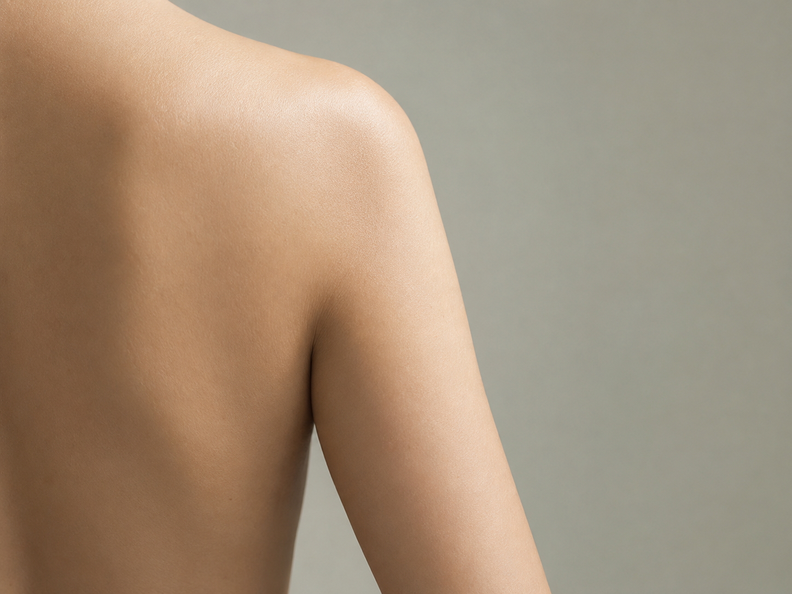
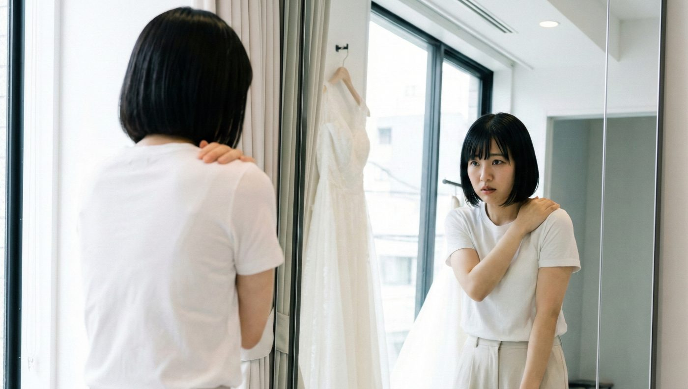
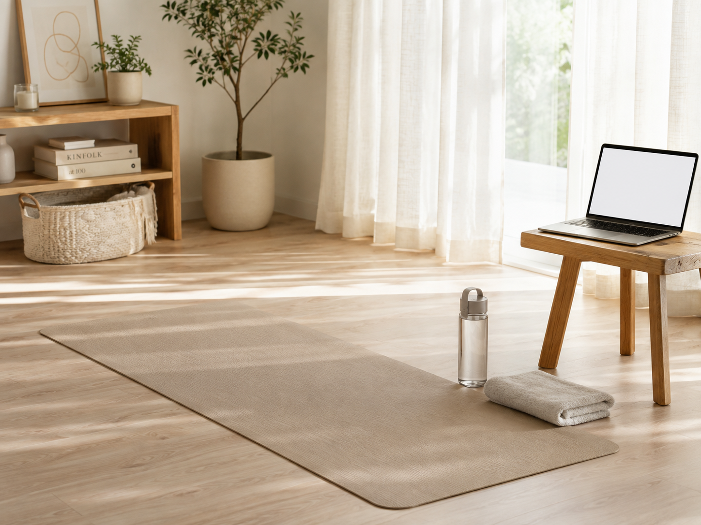

二の腕のタイプチェック
「太い」の中身は、
人によって違う。
同じ「二の腕が気になる」でも、つまんで厚いのか、揺れるのか、夕方だけ太いのか。原因によって、効きやすい対策が変わります。

先に結論です。二の腕が太く見える原因は、脂肪・たるみ・むくみ・ねじれの4つに分けて考えると整理しやすくなります。自分がどれに近いかを確認してから対策を選ぶと、遠回りが減ります。
二の腕の4つのタイプ
| タイプ | 分かりやすいサイン | 向いている対策 |
|---|---|---|
| 脂肪 | つまむと厚い。体全体も気になる | 食事の見直しと全身の運動 |
| たるみ | 腕を横に上げると下側が揺れる | 腕の後ろ側を使う運動 |
| むくみ | 夕方になると太く、指で押すと跡が残りやすい | 塩分と水分の見直し、こまめに動かす |
| ねじれ（姿勢） | 正面から見ると腕の外側が広い。手の甲が前を向いている | 巻き肩・猫背の姿勢を戻す |
鏡とスマホでできる見分け方
1
朝と夕方に同じ位置で写真を撮る夕方だけ太く見えるなら、むくみの影響が大きいと考えられます
2
腕を真横に上げて、下側をつまむ厚みがあれば脂肪、薄くてやわらかければたるみに近い状態です
3
まっすぐ立って手の甲の向きを見る手の甲が正面を向いているなら、腕が内側にねじれている可能性があります
4
すねや腕を指で5秒押す跡がしばらく残るなら、むくみが出やすい状態です
多くの人は、2つ以上が重なっています。当てはまるものを全部チェックしてください。

あわせて読みたい二の腕は「ねじれ」で太く見える巻き肩を直すと見え方が変わります変化を感じやすい順番
タイプによって、見た目の変化を感じるまでの期間が違います。式までの残り時間と合わせて、どこから手をつけるか決めてください。
むくみ
1週前後
ねじれ（姿勢）
3週前後
たるみ
10週前後
脂肪
14週前後
一般的な目安です。個人差が大きく、生活習慣によっても変わります。
タイプ別の次の一歩
- むくみが強い人。前日の塩分を控え、水は普段どおり飲む。当日朝のむくみ対策も参考にしてください
- ねじれが強い人。肩甲骨を寄せる習慣から。運動より先に姿勢です
- たるみが強い人。腕の後ろ側を使う運動を、週3〜4回続けます
- 脂肪が気になる人。腕だけを細くするのは難しいので、食事と全身の運動を合わせて考えます

あわせて読みたい花嫁の二の腕を自宅で整える器具なし1日5分のメニュー自分では判断しにくいとき
二の腕は自分の目で見えにくい場所です。どのタイプか迷う場合は、オンラインで姿勢やフォームを見てもらう方法もあります。

体の状態には個人差があります。ここに書いた期間や変化は一般的な目安で、効果を保証するものではありません。痛みや持病がある場合は、無理をせず医師に相談してください。